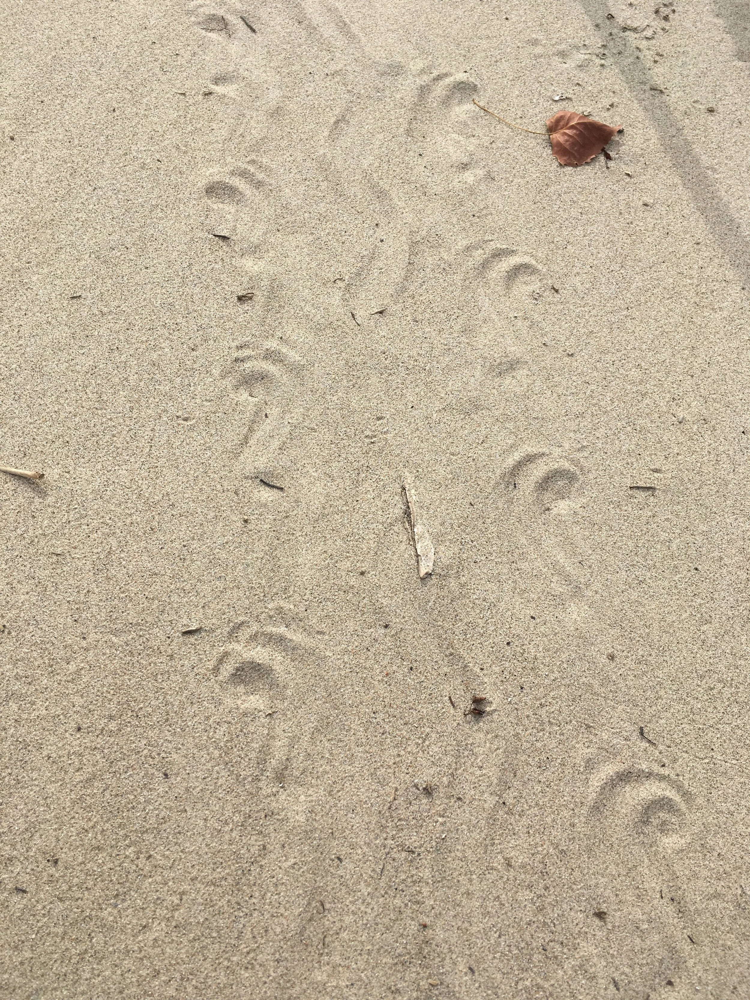
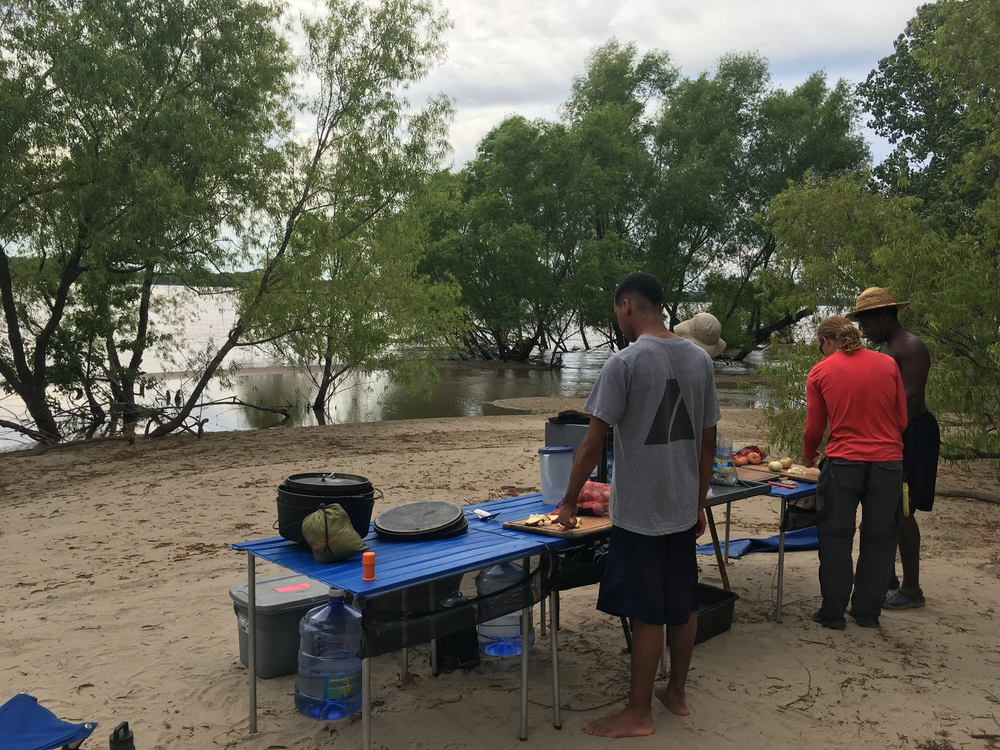
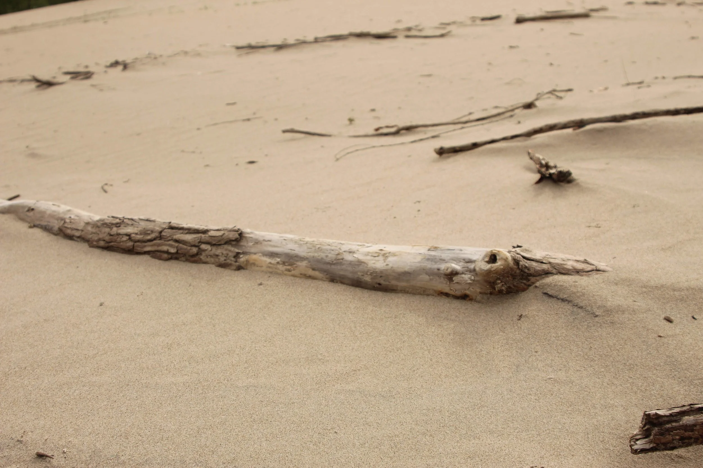
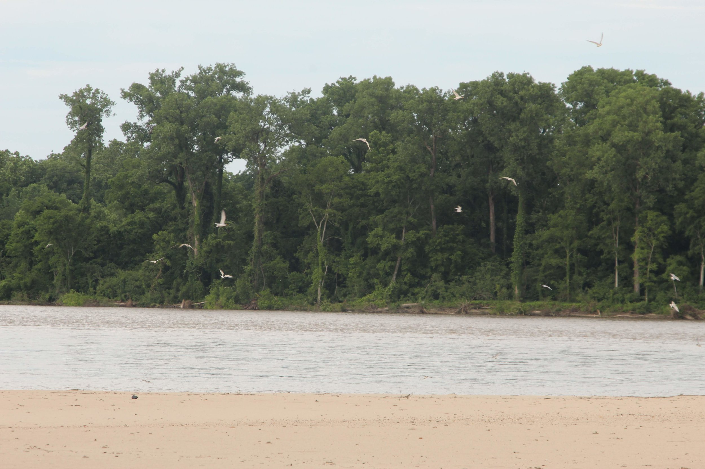
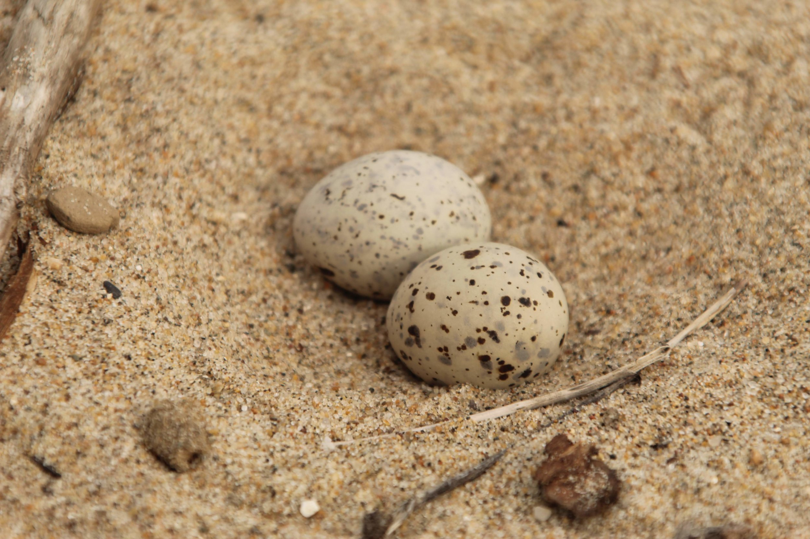
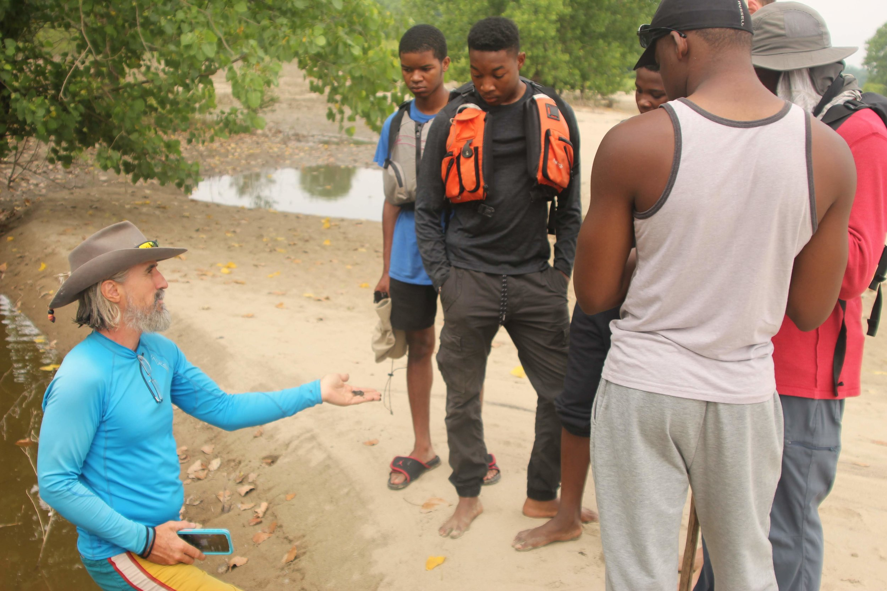
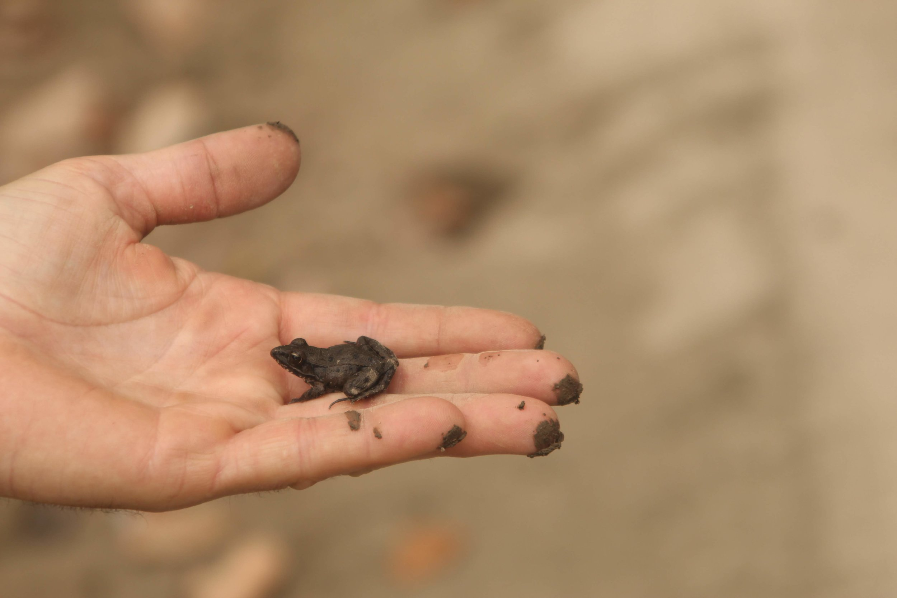

"And into the forest I go, to lose my mind and find my soul." - John Muir
I think it is an accepted fact that half way through any long adventure, it stops being fun. On the morning of Day 3, no one was having fun. It felt like work to pack up tents, to cook breakfast, to do basically anything.

We tried to counteract the lethargy by breaking up the routine. We spent the morning walking around Island 64, examining the natural world and learning about the animals and plants who share the island with us.

As we made our way downstream a few of our teammates really stepped up in their leadership and help to motivate the group to keep going. Although the day was long and challenging for everyone, the bonds of friendship became clear as the crew laughed and encouraged each other to push through.


Our long day was rewarded with a perfect evening on Island 67. This island is a haven for wildlife and we tiptoed quietly through their world marveling at what we found. On the opposite side of the island we found a colony of Least Terns nesting. They lay their eggs on the sand with almost no protection and rely on the remoteness of the island to protect them. A few predators had clearly found the spot and we saw signs of river otters and snakes feasting themselves on the eggs. Despite the predators there were still plenty of healthy eggs and the least terns seemed to be thriving.


Over the fire we talked about how the Mississippi River is not what people expect. How it is a wilderness and a swimming pool and a campground but most people never get a chance to see it. We felt lucky to spend an evening so close to the natural world.

